Porting the uniswap service to Neon EVM
The purpose of this document is to share the experience with Ethereum users how easily their applications can be ported to Neon EVM.
Uniswap is an open-source dApp used on Ethereum. In Ethereum, exchanging some tokens for others requires deploying contracts. We want to demonstrate that our Neon EVM product allows you to port the Uniswap service from Ethereum to Solana. To do this, we deploy the complete Uniswap infrastructure, including contracts in our Neon EVM, as well as the uniswap-interface on a separate server. Using the uniswap service deployed on Neon EVM, users can make transactions in their usual form and make sure that Neon EVM is functioning successfully.
Any dApp using the Uniswap service consists of 2 parts: contracts and software serving these contracts. Contracts are loaded into a chain, and the software is deployed on a separate server for providing users interaction with these contracts.
Porting applications from Ethereum to Solana is done in 3 stages:
- Deploying contracts in a Neon EVM environment.
- Checking the functioning of deployed contracts.
- Deploying Uniswap-interface.
Stage 1. Deploying contracts in a Neon EVM environment
No changes to the Uniswap product are required to port applications using the Uniswap service. The product version used is Uniswap-v2. Changes are made only to those components that are necessary for its operation on Neon EVM.
The contracts are built by a typical Solidity compiler used in Ethereum. After compilation, all the necessary contracts are deployed on Neon EVM using a Web 3 proxy. This proxy provides a standard interface that Ethereum utilities and tools can use.
Here is a list of contracts to be deployed:
- Governance.
- Uniswap-v2-periphery.
- Multicall.
Changes for deploying contracts
The following changes were made for deploying contracts in Neon EVM:
- The timeout value was increased.
- The number of repeated requests for transaction recipes was increased:
- The call
wait factoryV1.createExchange(WETHPartner.address, overrides)
was replaced bylet id = await factoryV1.createExchange(WETHPartner.address, overrides) let receipt = await provider.waitForTransaction(id.hash, 3).
- The call
- Added the
deploy contracts()method.
As a result, we get the addresses of the following uploaded contracts:
- UNI_ADDRESS
- TIMELOCK_ADDRESS
- GOVERNANCE_ADDRESS
- MULTICALL_ADDRESS
- MIGRATOR_ADDRESS
- FACTORY_ADDRESS
- ROUTER1_ADDRESS
- ROUTER_ADDRESS
- V1_FACTORY_ADDRESS
- WETH_ADDRESS
Stage 2. Checking the functioning of deployed contracts
Contracts health checking is performed in a real chain, not in a test environment, which is fully managed.
Unlike the test environment, in a really working chain, the range of test operations cannot be performed in full (for example, operations such as generating a block with a specified number of transactions, etc., are excluded). In a chain, all operations rely on real-time and a user checking the contracts cannot influence the block generation.
To test Uniswap, we use the entire set of tests available in Ethereum. The method of running these tests has been changed. Before running the tests, it is indicated that the deployment of contracts, calls to their methods, as well as testing takes place not in the test framework, but in the real blockchain.
For testing, we use an unmanaged environment. However, in uniswap tests (in contracts), there are sections of program code that contain environment management. In these pieces, we were able to successfully replace the environment management to expectation for a reaction from a chain. That is, where the block is to be generated, a delay is set. Then an action is performed and the reaction of the contract is evaluated, namely, whether it meets the expectation or not. At the same time, we believe that the number of blocks produced may be different.
The need to adapt tests is due to the fact that tests must issue correct results regardless of the run conditions.
Changes for running the uniswap-v2-core test suite
The following changes were made to run the uniswap-v2-core test suite in Neon EVM:
- Increased timeouts when expanding contracts.
- Changed ChainId.
- Replaced the rcp-request libraries, including the following:
Web3ProviderandMockProviderreplaced withJsonRpcProvider. - Changed the test using the
mineBlock()method. - Increased the number of re-requests in the
ethereum-wafflelibrary for receiving transaction receipts, including the following:- In file
uniswap-v2-core/node_modules/@ethereum-waffle/chai/dist/cjs/matchers/emit.js
the lineconst derivedPromise = promise.then((tx) => contract.provider.getTransactionReceipt(tx.hash) ).then((receipt) => {
was replaced byconst derivedPromise = promise.then((tx) => contract.provider.waitForTransaction(tx.hash, 3) ).then((receipt) => {.
- In file
- Increased the value of
gasLimitin theethereum-wafflelibrary.
Stage 3. Deploying Uniswap-interface
After we have managed to get the addresses of the contracts loaded into the Neon EVM, we can start deploying the uniswap-interface. It is necessary to specify that we use a real blockchain and our contracts are located in this blockchain.
Changes for the uniswap-interface
For the uniswap-interface to function successfully in Neon EVM, we were made the following changes:
- Added a new testnet to the adapted uniswap-interface code. The name of the new network with the new chain-ID is registered in all places where it was used, including:
- Added
ChainId LOCALto dependent libraries and sources. - ChainID, url was specified in the .env file.
- Added
- For the new network, a set of the loaded contracts was registered. In the directory
node_modules, the addresses of contracts in the sources and dependent libraries were replaced.
The next section contains an example of step-by-step actions for deploying and exchanging a pair of tokens via Neon EVM using Uniswap.
Example. Exchanging tokens using Uniswap
Initial data. We have 2 types of tokens T_A1 and T_B1. There are 10,000 tokens on the balance of each of them. The current rate of T_A1 and T_B1 tokens is 1:2, respectively.
Goal. We need to exchange 1000 T_A1 for T_B1 tokens.
Step 1. Connect Metamask to your proxy server (the proxy server should already be deployed in Neon EVM by this time).
To do this, open Metamask and in the settings for Networks in the Neon RPC URL field, write the domain address https://uniswap-interface.neonlabs.org:9090/solana. This address is required to connect to the proxy server.
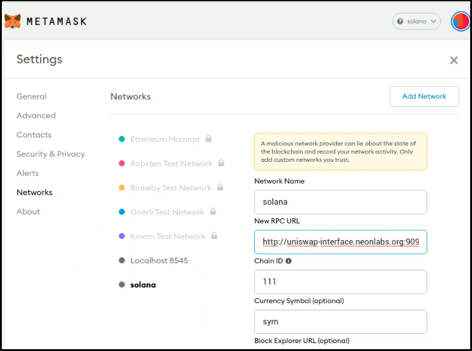
Step 2. Create and deploy an ER20 standard contract containing the T_A1 token. To do this, open the Remix web application and load the ERC20 contract into it. Write the data of the T_A1 token to this contract.
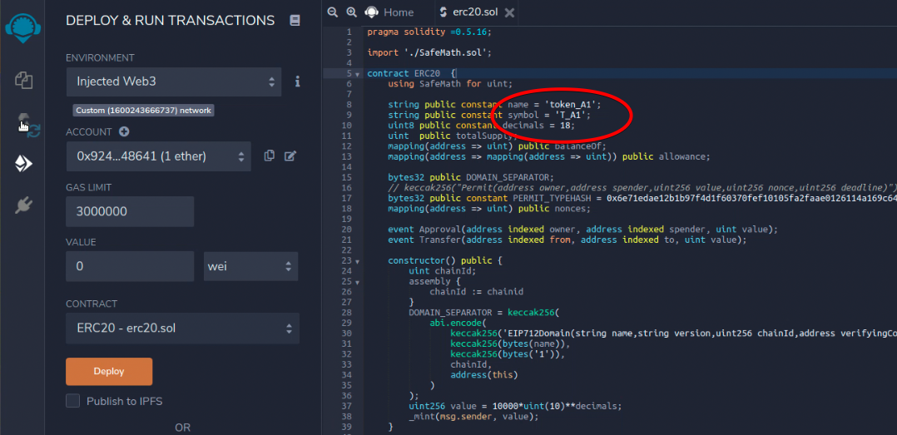
After editing the text, compile the contract.
Step 3. Сlick Deploy in the Remix web application.
Metamask will activate to determine the required signature and add it to the transaction. The transaction will be sent to the proxy server and then to Solana. After the transaction is successfully completed, the contract containing the T_A1 token will be deployed.
Step 4. Repeat actions of 2 and 3 steps to create and deploy a contract for the T_B1 token.
If the operations for deploying contracts for T_A1 and T_B1 tokens are completed successfully, 2 addresses of these contracts will appear in the lower-left corner of the Metamask window. To the right of the address is an icon for copying this address.
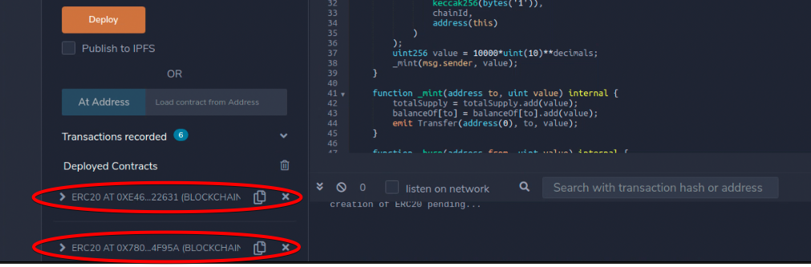
Step 5. For an exchange operation, it is necessary to create a liquidity pool for a pair of tokens that will be exchanged. Certain amounts should be debited from the balances of these tokens. The exchange operation must be carried out within these amounts.
Open the main page of the Uniswap interface (registration is required to enter this page). The address of Metamask is indicated in the upper right corner. There are 2 operations in the upper left menu:
Swap- token exchange operation.Pool- creates a pair of tokens between which an exchange operation will be performed.
In the menu, click Pool and In the pop-up window, click Create a pair.
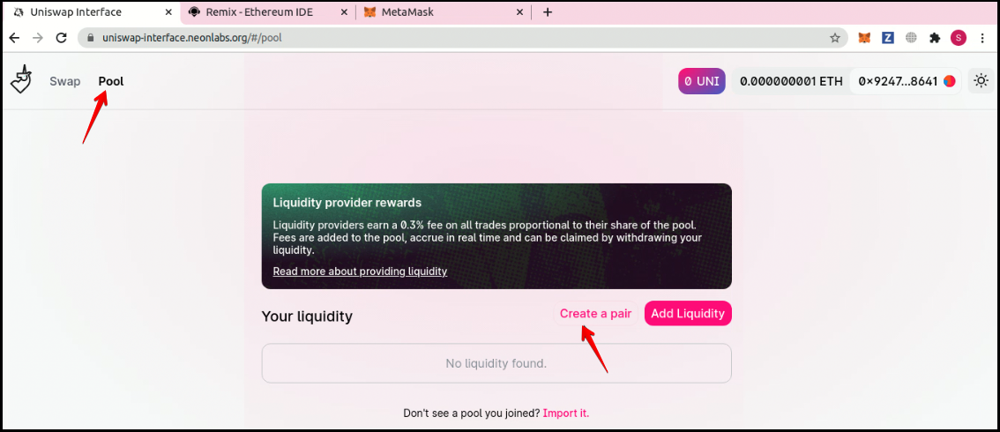
Step 6. In the Remix window, you need to copy the T_A1 token address. Then open the Uniswap window and write this address into the Select a token field. Click Import.
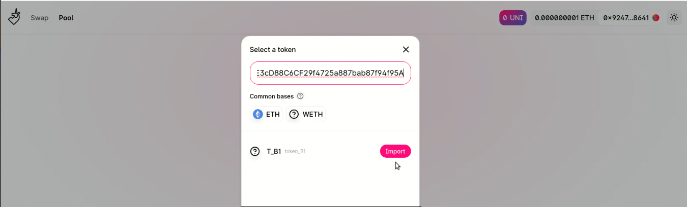
Repeat this step to copy the T_B1 token address.
When creating a liquidity pair, a warning about the risk of selling a token back may appear.
Step 7. After setting a pair of tokens, a pop-up window should appear with the balances of these tokens.
Specify the amount for which the liquidity pool is created. For example, let's assume that there are 10,000 tokens on the balances of both tokens. Also, let's create a pair of tokens with values 1000 and 2000 for T_A1 and T_B1 respectively. This means the exchange operation can be performed for amounts not exceeding 1000 and 2000 tokens for T_A1 and T_B1, respectively. These amounts will be reserved for exchange. The exchange rate is 1:2.
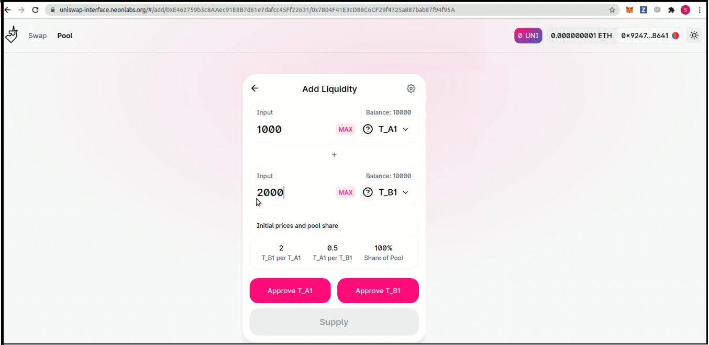
Creating a liquidity pair requires an approval operation for both tokens. The need for the operation is due to the ERC20 contract requirement.
Click Approve_TA1 and then confirm the operation in the Metamask pop-up window. Repeat this operation for another token.
After receiving a notification about the successful completion of both transactions, click Supply.
Step 8. In the window that appears, click Create Pool & Supply. Confirm this operation in the Metamask window.
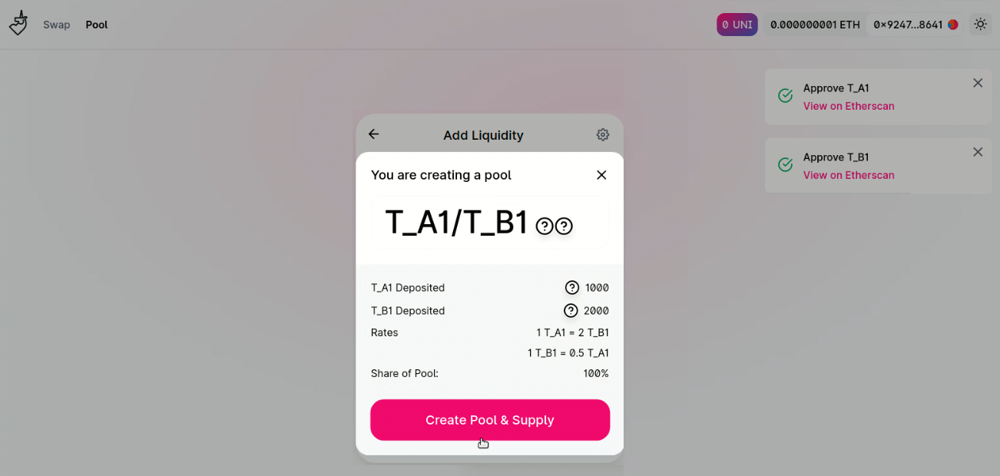
After receiving a notification about the successful completion of the transaction, click Close
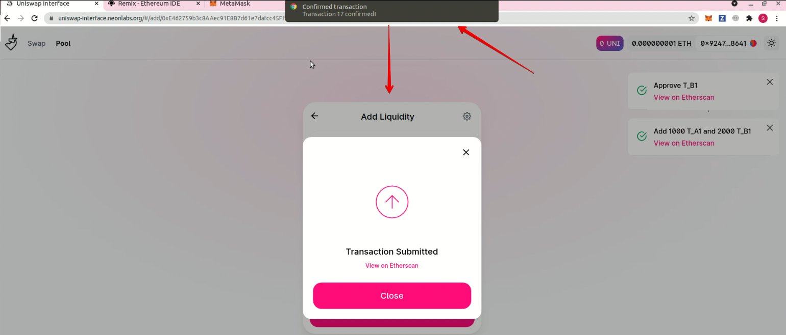
Step 9. Make sure the balances have been updated. The balances of the T_A1 and T_B1 tokens should be reduced by 1000 and 2000 tokens, respectively. Now the token exchange operation can be performed.
In the upper left corner of the Uniswap window, select the Swap operation.
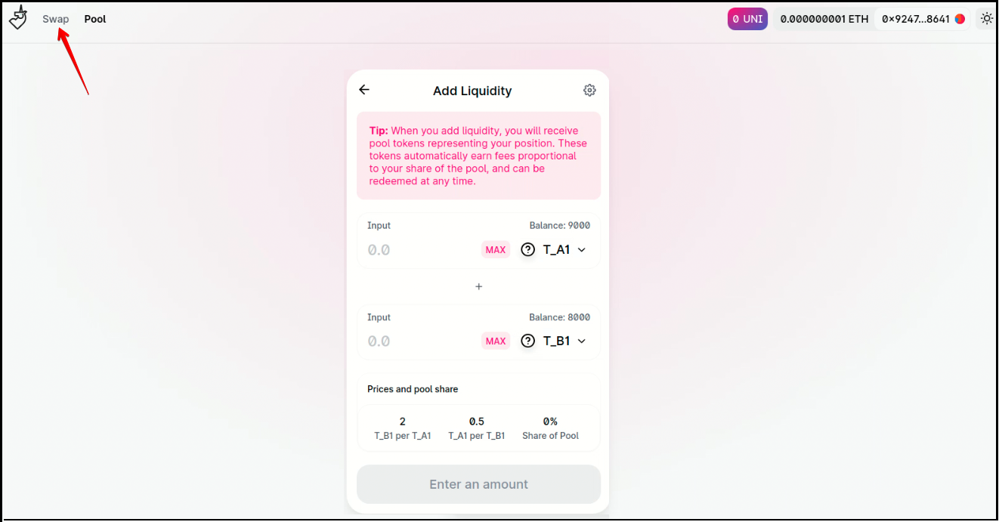
Step 10. In the appearing Swap window, select the T_A1 and T_B1 tokens using Select a token. Specify the exchange amount in From. The amount for T_B1 will automatically appear in To. This amount is calculated taking into account the exchange rate and fee. The exchange rate is calculated based on the amounts of tokens specified in the pair.
For example, let's specify the exchange amount of 1 token.
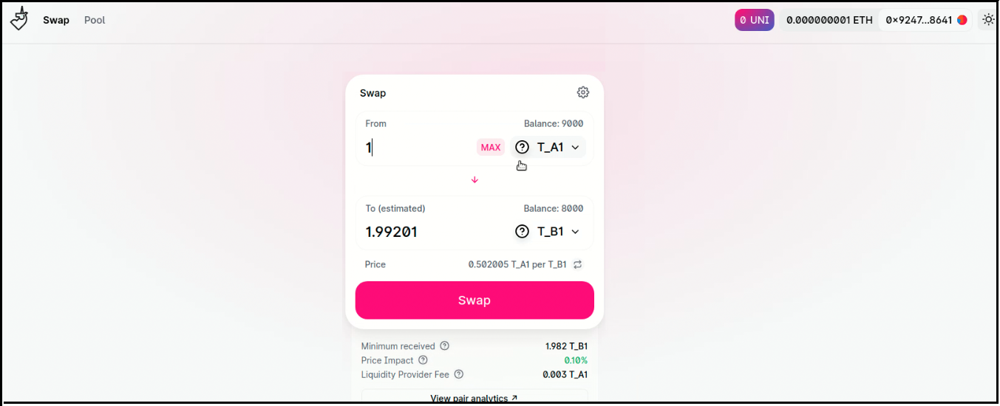
Step 11. Click Swap and then Confirm swap.
After the transaction is completed successfully, click Close to end the session. The final Swap window should appear with updated token balances. The T_A1 balance will decrease by 1 token, and the T_B1 balance will increase by almost 2 tokens.
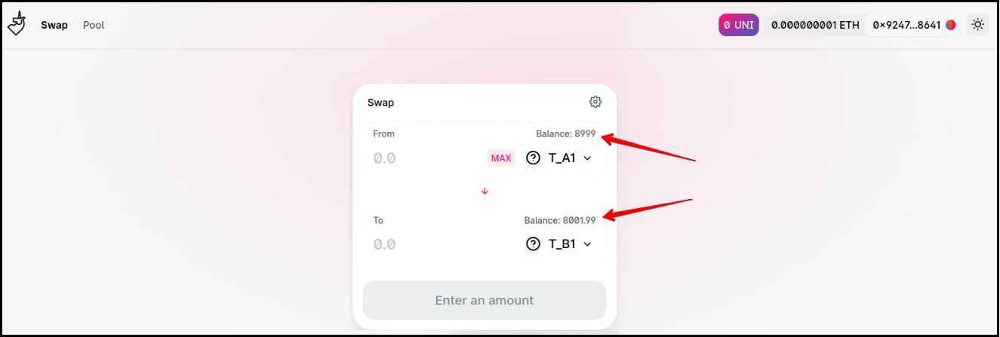
More details
All changes we made for Porting the uniswap service to Neon EVM can be found in the uniswap-v2-core repository.